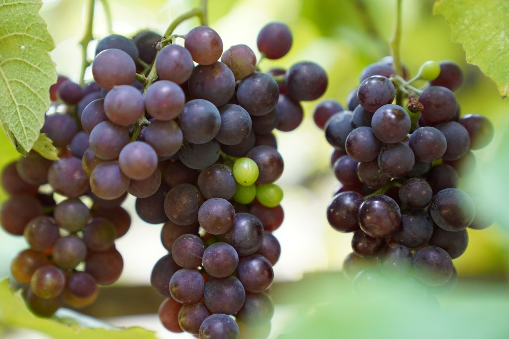

Grapes (Vitis vinifera)
First Cultivated: ~8000 BCE
Optimal Climate: Warm temperate with dry harvest seasons
Water Requirement: 20 to 30 inches annually
Grapes were domesticated in the Near East and spread rapidly across Mediterranean trade routes. Fresh fruit, raisins, and fermented beverages made vines economically and culturally important. Terraced vineyards still shape landscapes from Greece to southern France and North Africa.